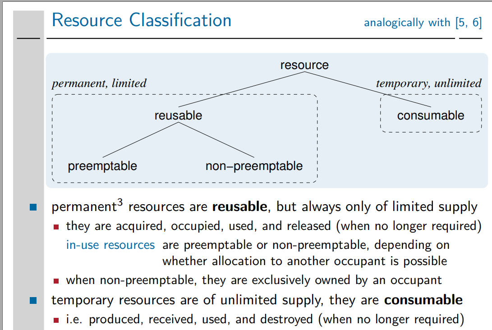
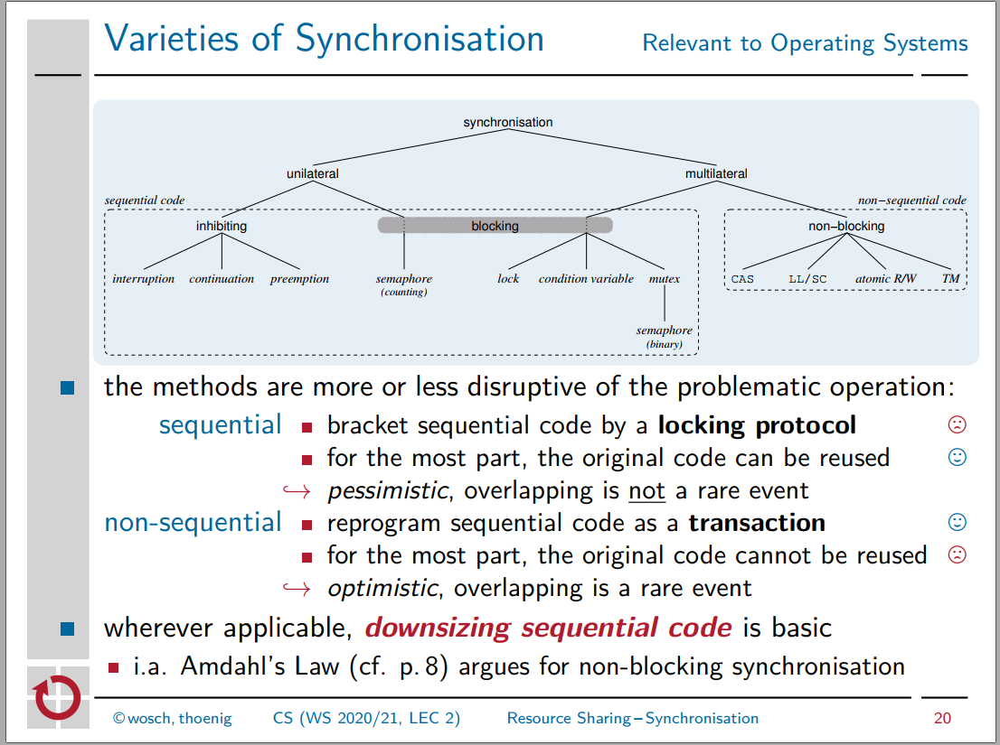

Übergeordnetes Credo: "Konstruktive Cross-Layer Lösungen > Analytische Lösungen"
Nebenläufigkeit
Verhältnis von nicht kausal abhängigen Ereignissen ("incomparable poset elements")
- Kein Ereignis ist Ursache oder Wirkung des anderen
- erlaubt Ausführungsmodus "parallel" (logisch oder auch physisch) im Gegensatz zu "sequentiell"
- muss immer bzgl. Abstraktionsebene betrachtet werden
- Zwei Prozesse können logisch nebenläufig sein, physisch jedoch nicht (z. B. auf Einprozessorsystem, oder weil sie beide Speicher lesen/schreiben durch einen Bus); ⇒ Phänomen i.O.: beeinträchtigt funktionale Eigenschaften nicht; aber Interferenz
- andersrum: logisch sequentiell und physisch nicht-sequentiell (d.h. parallel auch möglich (superskalare CPUs, RMW-Zyklus)) ⇒ Phänomen i.Allg. kritisch
- Gegenteil von Kopplung
Wann immer Nebenläufigkeit existiert, gibt es typischerweise daneben auch gekoppelte Ereignisse (das eine Wirkung/Ursache des anderen)
⇒ Synchronisation erforderlich
Gleichzeitige Prozesse: gleichzeitig in Raum (Speicher) oder Zeit; nebenläufig oder gekoppelt.
Race Condition: The behaviour of a computing system, hardware or software, in which the result or progress depends on the simultaneity of processes.
Kritischer Abschnitt: räumlicher Bereich (Text, Daten) in einem Programm, der eine Wettlaufsituation gleichzeitiger Prozesse möglich macht und dadurch eine in sich inkonsistente Aktionsfolge hervorbringen kann; muss geschützt werden durch Synchronisationsmaßnahmen (blockierend/nicht-blockierend/Hardware-ELOP).
Eigenschaften des Speicherzugriffs
-
Sichtbarkeit: ob Änderungen einer Speicherzelle überhaupt sichtbar wird
-
Speicherkonsistenz: wie Änderungen verschiedener Speicherzellen als Ganzes oder in welcher Reihenfolge sichtbar oder nicht sichtbar werden
while (!acquire(f));
print(x);
store(x, 42);
store(f, true, release);
-
Barrieren: auf einer CPU Erzwingung einer bestimmten Abarbeitung (Reihenfolge) der Instruktionen
while (!acquire(f));
asm_barrier;
print(x);
store(x, 42, relaxed);
asm_barrier;
store(f, true, relaxed);
Blockierend vs. Nicht-blockierend
| Synchronisationsform |
in Konkurrenzsituationen |
Prozesszustand |
Flair |
Vorteile |
Nachteile |
Ausprägungen |
| block. Synchr. |
- blockieren Prozesse
- geben Kontrolle ab
|
wechselt zu blockiert |
pessimistisch |
Sequenzieller Code übernehmbar, "nur mit Locks klammern" |
- Verklemmungen möglich
- erhöhen Sequenzialität, reduzieren Nebenläufigkeit, behindern Parallelität
- anfällig für Prioritätsverletzungen
- eher grob (i.Vgl. zu einzelnen atomaren Befehlssatzbefehlen)
|
- Sperren
- Semaphore
- Mutexe
- Monitore
|
| nichtblock. Synchr. |
- führen Prozesse fort, Wiederholung gescheiterter Aktionsfolgen
- behalten Kontrolle über logisches Geschehen
|
bleibt laufend/bereit |
optimistisch |
minimalinvasiv |
- Live locks
- Verhungern
- Kompliziertere Softwarearchitekturen (konstrukt. Achse) und Algorithmen (transakt. Achse; Multiwort-Updates)
- Skaliert sehr schlecht, wenn Datenstrukturen ausgebaut werden (LIFO/FIFO-Liste zu allg. Liste)
|
- ISA ELOPs
- Transaktionaler Code
|
Die Kontrollabgabe und Prozesszustand beziehen sich auf Ebene des Anwendungsprozesses.
Tatsächlich kann der Kernelprozess die Kontrolle behalten oder logisch (auf BS-Ebene) oder auch physisch (auf CPU-Ebene) abgeben; Beispiele:
- Wenn Umlaufsperren benutzt werden, so blockiert der Anwendungsprozess, aber der Kernelprozess läuft weiterhin
- Werden BS-Primitiven als Sperren benutzt, so blockieren Anwendungs- und Kernelprozess; trotzdem kann CPU gehalten werden, wenn z.B. BS die Prozessinkarnation als Idleprozess "missbraucht"
Ressourcen

- Ressourcenarten implizieren verschiedene Nutzungsmuster:
- Wiederverwendbare Ressourcen immer Behälter für konsumierbare Ressourcen
- Synchronisation benötigt für
- Teilen ein und derselben wiederverwendbare Ressource (multilateral; "coordination of competition", "gleichberechtigte Rivalen")
- Übergabe ein und derselben konsumierbaren Ressource (unilateral; "coordination of cooperation", "Erzeuger-Verbraucher Rollenspiel")
Synchronisation: Maßnahmen zur
- Erzwingung der Kausalordnung auf Ereignissen zur Laufzeit (entweder durch statische oder dynamische Maßnahmen); multilateral oder unilateral
- logischen Unteilbarkeit von komplexen Operationen (z. B. mit Locks bei block. Synchronisation [hier auch phys. Unteilbarkeit] oder mit Transaktionen bei nichtblock. Synchr.)

Fortschrittsgarantien
Ausgang ist immer System von Prozessen in Konkurrenz-/Kooperationssituation.
-
behinderungsfrei
- garantiert prozessweiten Fortschritt durch systemweite Schrittausführung beschränkt auf einen Prozess
- jeder in Isolation stattfindende Prozess kann die Operation in einer endlichen Anzahl von systemweiten=prozessweiten Schritten vollenden
- "radikales Modell", das versucht Fortschrittsgarantien nicht Verpflichtung der Anwendungsalgorithmen, sondern des Schedulers sein zu lassen.
- Aufgabe der Anwendungsalgorithmen ist nur, in Isolation nach endlicher Zeit zu vollenden
-
sperrfrei ("sperr" wie in "sperrt das System nicht", nicht in Anlehnung an Sperren!)
- garantiert systemweiten Fortschritt durch systemweite Schrittausführung, egal mit welcher Planerstrategie (kann sich z. B. auf einen Prozess beschränken!)
- nach einer endlichen Anzahl von systemweiten Schritten hat mindestens ein Prozess die Operation vollendet, ohne Rücksicht auf die relativen Geschwindigkeiten der anderen Prozesse.
- Einzelne Prozesse können verhungern
- Algorithmen einfach implementierbar, für Nicht-Echtzeit-BS i.O.
-
wartefrei
- garantiert prozessweiten Fortschritt durch prozessweite Schrittausführung
- jeder Prozess kann die Operation in einer endlichen Anzahl von prozessweiten Schritten vollenden, ohne Rücksicht auf die relativen Geschwindigkeiten der anderen
- insb. Verhungern irgendeines Prozesses vermeidbar durch Roundrobin systemweite Schrittausführung
-
Verallgemeinerung (von mir): garantiert prozessweiten Fortschritt durch systemweite Schrittausführung
- Prozesse könnten die Arbeit anderer Prozesse abnehmen.
Beispiele:
- behinderungsfrei:
lock(); X; unlock();; nicht sperrfrei, da wenn ein Prozess lock() macht und dann nur noch zweiter eingelastet wird, dieser unendlich lang blockiert.
- sperrfrei: transaktionale nichtblock. Algorithmen; zur Laufzeit ergibt sich Totalordnung auf CASes, der erste, der ein CAS überhaupt ausführt, gewinnt, und es wird mindestens ein CAS nach
<BefehleInSchleifenrumpf> * <AnzProzesse> systemweiten Schritten ausgeführt.
- wartefrei: atomare Befehlssatzbefehle, z. B. fetch-and-add, atomic exchange, CAS, TAS (angewandt ohne Schlelife; CAS/TAS in Schleifenbedingung typischerweise nicht wartefrei)